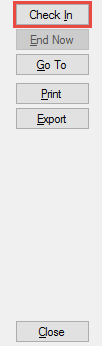
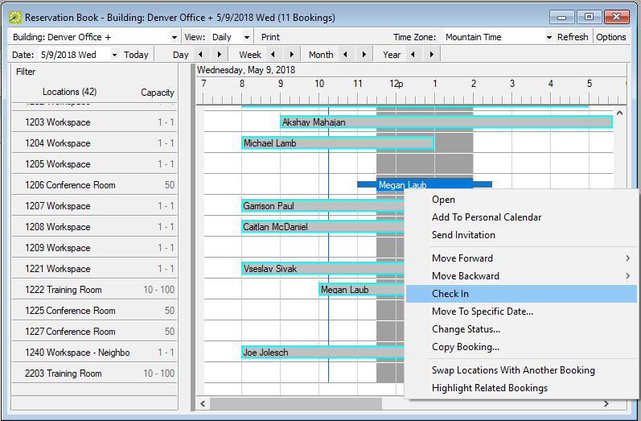

Booking Check-In Dashboard
By going into the Booking Check-In area in the and entering the information into the filters, an administrative user can check in a booking by highlighting it and selecting Check-In. This feature replaces the Building and Booking Check-In tools in previous releases.

Reservation Book
Bookings in the Reservation Book of the can be checked into by right-clicking on the booking and selecting Check In.
